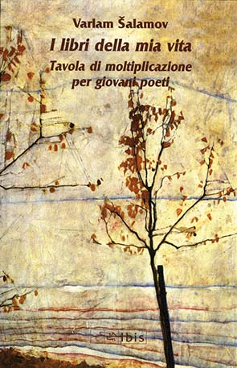
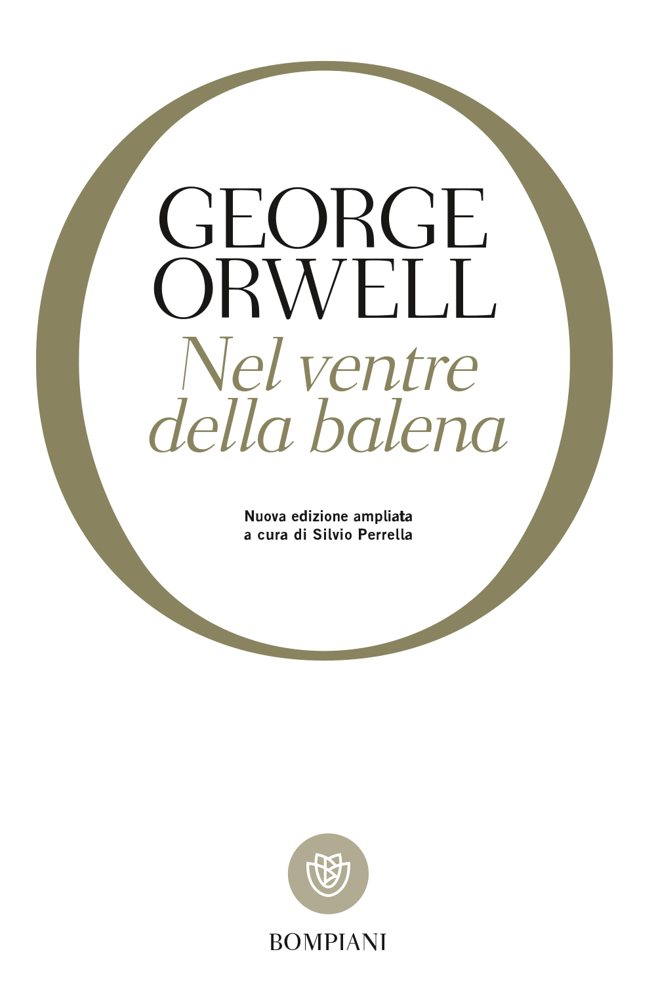

55:56
55:56PER CONOSCERE IL CANALE
Il peso delle idee.
Perché condividere le letture e le idee? Dr Divago racconta le ragioni del canale e il senso delle sue conversazioni.
Nel vasto oceano della rete, Sergio Caldarella affida alle conversazioni del suo canale YouTube Dr Divago messaggi in bottiglia: libri, idee, riflessioni e domande, lasciati liberi di raggiungere chiunque abbia voglia di raccoglierli.
Il Circolo nasce da chi quei messaggi li ha raccolti e desidera custodirli, condividerli e continuare a farli viaggiare.
A noi il compito di continuare a tracciare e percorrere le strade del pensiero, coltivando la conoscenza e mantenendo viva quella ricerca del vero, del buono e del bello che da sempre accompagna l'avventura umana.
DUE VIDEO PER INIZIARE
55:56PER CONOSCERE IL CANALE
Perché condividere le letture e le idee? Dr Divago racconta le ragioni del canale e il senso delle sue conversazioni.
 58:19
58:19UN PERCORSO DI LETTURA
Utopie, distopie e libertà di pensiero: un percorso tra i libri che precedono e accompagnano George Orwell.
LO SCAFFALE DEL CIRCOLO

Un invito a diffidare delle certezze, cominciando dalle proprie.

Un percorso fra vita quotidiana, cultura e pensiero critico.

Una biblioteca personale, una geografia della memoria.

Libertà di pensiero, autonomia e responsabilità nel confronto.

Che cosa chiediamo all’educazione e alla cultura?

Scrittura, esperienza e libertà dello sguardo.
Le parole pronunciate possono continuare a vivere anche sulla carta, diventare pagine da leggere, rileggere, sottolineare e conservare.
Da questo desiderio nasce il nostro progetto editoriale: raccogliere le conversazioni di Sergio Caldarella in una collana di libri, per custodirne la voce e accompagnare le sue idee verso nuovi lettori.
Perché ogni libro è un altro modo di far viaggiare un pensiero.
Scopri il progetto editoriale →